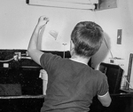

About Me
My dad built a darkroom in the basement when I was 4. It was a real room with a big sink, heat, and an exhaust fan. He jackhammered a hole in the floor for a dry well to drain the rinse water. I clearly remember the first time I watched a white piece of paper floating in the developer, under red safelight, as the image emerged. I was smitten.
Dad and my two older brothers used it a lot. Dad did technical photography professionally and we also had the gear to make photo-silk screens. Most of the photography dad did at home was taking pictures for the shows and musical events my older siblings were in at school. So, I was exposed to lots of 60’s era tech as a youngster, and it kind of sunk in.
Since there were at least three photographers in the house, there were spare cameras and I had interest in doing something myself. I picked up a camera that was lying in the back of a drawer and bought some film and took pictures of our cats. The camera was an East German 35mm Praktiflex. It was in the back of the drawer for a reason, apparently. The light seals weren’t very good and I had to use electrical tape when I loaded a new roll of film so the film wouldn’t be exposed through the back of the housing. There was no built in light meter, so I had to learn to use a separate light meter. The aperture had to be set manually for every shot – you had to manually open it up so you could see to focus, and then manually stop it down for the correct exposure to shoot. After the shutter tripped the mirror stayed up. It was lowered again when the film was advanced. It was not automatic anything, but I learned a lot using it about how everything interacts when you take pictures.
Connect with Me